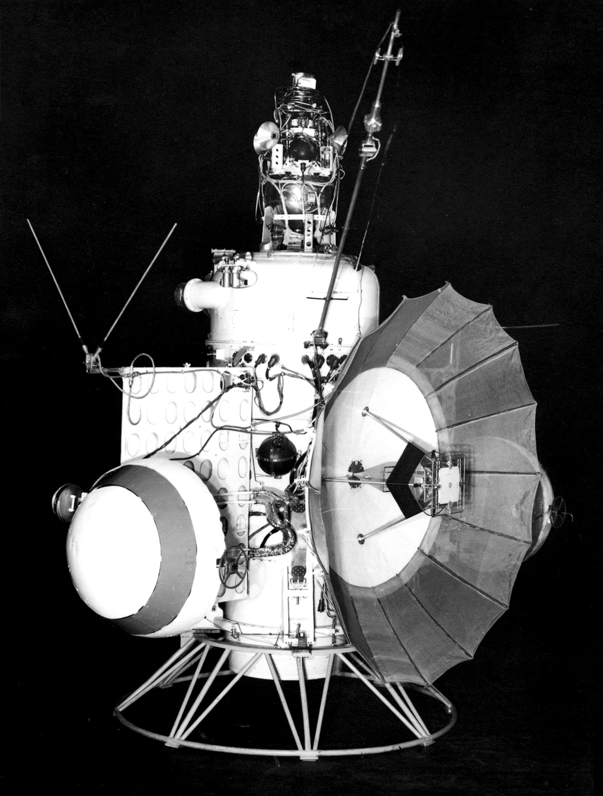
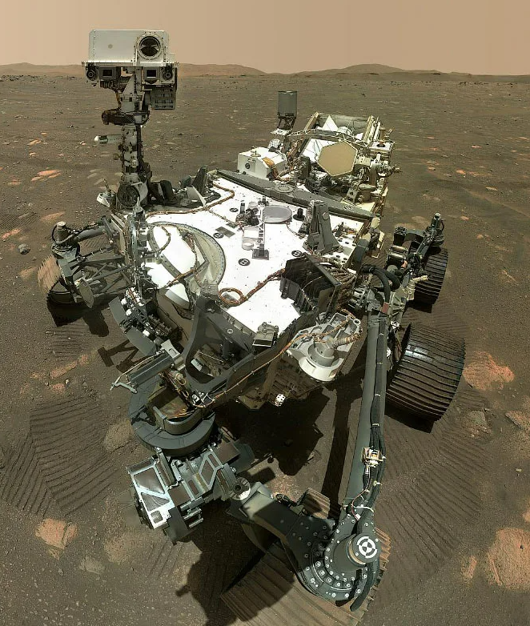

MARS
Марс - достаточно отдаленная планета, которую люди на протяжении долгих лет пытаются изучить. Начиная с шестидесятых годов страны, находясь в космической гонке, пытались отправить летательные аппараты на Марс, но все шло не так гладко.
Можно выделить нексколько типов марсианских миссий по типам отправляемых модулей:
- Орбитер. Спутник выходит на орбиту планеты и работает на ней определенное время, собирая информацию о планете и ее атмосфере. Например, "Маринер-9"
- Пролетная миссия. Модуль пролетает мимо космческого объекта, обычно в процессе выполенения гравитационного маневра. В момент сближения с планетой модуль снимает фотографии и собирает информацию. Яркий пример - миссия "Вояджер" (но не для Марса).
- Ландер. Модуль приземляется на поверхность планеты и, изучая свою окрестность, собирает информацию о небесном теле. Например, "InSight" (2018).
- Ровер. Модуль приземляется на поверхность планеты и спускает на нее беспилотный аппарат, способный передвигаться по повернхности. Например, "Perseverance"
- Атмосферный летательный аппарат. Данный тип модулей - экспериментальный, первый из них был запущен впервые только в 2021 году в рамках миссии "Ingenuity". Это беспилотный вертолет, который может летать в атмосфере Марса.
Марс-[1..9]
 «Марс» — автоматические межпланетные станции, запускавшиеся СССР с 1960 по 1973 год. С 1961 по 1969 г. Советский Союз запустил 9 аппаратов к Марсу, но ни один не выполнил поставленных целей полностью. Самый большой успех - Марс-1 (пролётная миссия). Аппарат впервые вышел на траекторию движения к красной планете, но связь с ним оборвалась из-за неполадок с антенной.
Марс-1
Это был пролетный зонд, который находился в 106 миллионах километров от Земли и потерял связь с Землей. Вероятно это произошло из-за нештатной системы ориентации космического аппарата.
Марс-2
В ходе выполнения миссии Марс-2 на поверхность Красной Планеты был отправлен спускаемый аппарат. Это была первая попытка мягкой посадки на Марс. Произошло событие 27 ноября 1971 года. Однако система спуска вышла из строя. И спускаемый аппарат потерпел крушение, доставив герб Советского Союза на поверхность планеты. Орбитальная станция отправляла данные на Землю в течение нескольких месяцев.
Марс-3
Летательный аппарат совершил первую в истории мягкую посадку на Марс. Спустя 20 секунд связь была потеряна. Орбитальный аппарат передавал сигналы несколько месяцев.
Марс-4
По техническим причинам Марс-4 был отброшен на нештатную орбиту и пролетел в 2200 км над поверхностью планеты, передав серию изображений.
Марс-5
Планы миссии Марс-5 были аналогичны задачам экспедиции Марс-4. Нужно было достичь орбиту вокруг планеты и фотографировать поверхность ее поверхности, но из-за отказа бортовых вычислителей аппарат работал всего несколько дней.
Марс-6
Эта миссия включала в себя орбитальный аппарат и спускаемый модуль. Марс-6 достиг Красной планеты 12 марта 1974 года. Модуль вышел из строя, миссия провалилась
Марс-7
Миссия Марс-7 началась 9 марта 1974 года, но его посадочный модуль преждевременно отделился и пролетел мимо планеты на расстоянии 1300 километров.
Таким образом, космическая программа "Марс" не принесла прямых результатов, но помогла в разработке технологий, которые были использованы в дальнейших полетах на красную планету.
INGENUITY
Миссия MARS 2020
 30-го июля 2020 года на Марс был запущен новый ровер NASA. С первого взгляда он напоминает своего предшественника - аппарат Curiosity, на деле между роверами и их задачами огромная разница. NASA, начав с первого пробного ровера-разведчика Sojourner, а затем перейдя к более сложным марсоходам-геологам, таким как Opportunity и Spirit, позднее был запущен первый марсоход- искатель внеземной жизни под названием Curiosity. Именно его дело должен продолжить марсоход из миссии Mars 2020 под названием Perseverance. В этой миссии впервые марсоход будет действовать не один, ему на помощь придет коптер, с названием Ingenuity. Основной ровер выпустит его уже на поверхности Красной планеты. Посадка прошла успешно, два аппарата уже более года изучают поверхность Марса. Множество фотографий и видео уже выложены в открытый доступ.
Ingenuity
Вертолет NASA Ingenuity - это первый летательный аппарат, который человечество отправило на другую планету, чтобы совершить управляемый полет с двигателем. Если его экспериментальная программа летных испытаний увенчается успехом, полученные данные могут принести пользу будущим исследованиям Красной планеты, в том числе астронавтами, добавив измерение с воздуха, которое сегодня недоступно.
На Марсе невыносимые температуры, а ночи холодные до минус 130 градусов по Фаренгейту (минус 90 градусов Цельсия) в кратере Езеро. Эти температуры расширят пределы первоначальной конструкции готовых деталей, используемых в Ingenuity.
Марс имеет разреженную атмосферу – всего около 1% от плотности нашей атмосферы на Земле. Поскольку атмосфера Марса намного менее плотная, "Ingenuity" спроектирована так, чтобы быть легкой, с лопастями несущего винта, которые намного больше и вращаются намного быстрее, чем это потребовалось бы для вертолета такой массы, как "Ingenuity" на Земле. Марс действительно немного помогает вертолету: гравитация там составляет всего около трети от земной. Это означает , что при заданной скорости вращения можно поднять немного больше массы.
Об управлении
Задержки являются неотъемлемой частью связи с космическими аппаратами на межпланетных расстояниях, что означает , что диспетчеры полетов вертолета не смогут управлять вертолетом с помощью джойстика или просматривать технические данные или изображения с каждого полета до тех пор, пока полет не состоится. Поэтому Ingenuity будет принимать некоторые собственные решения, основываясь на параметрах, установленных ее инженерами на Земле. Например, у Ingenuity есть своего рода программируемый термостат, который будет поддерживать тепло на Марсе. Во время полета Ingenuity проанализирует данные датчиков и изображения местности, чтобы гарантировать, что он остается на траектории полета, запрограммированной инженерами проекта.
Выводы миссии
Ingenuity - эксперимент, который прошел вполне успешно. Изначально NASA планировали 13 полетов, но коптер будет летать, пока не выйдет из строя. Перспектива летательных аппаратов такого типа очень ценна и обширна, так как роверы не могут исследовать впадины и глубины красной планеты (даже на равнине с трудом передвигаются)